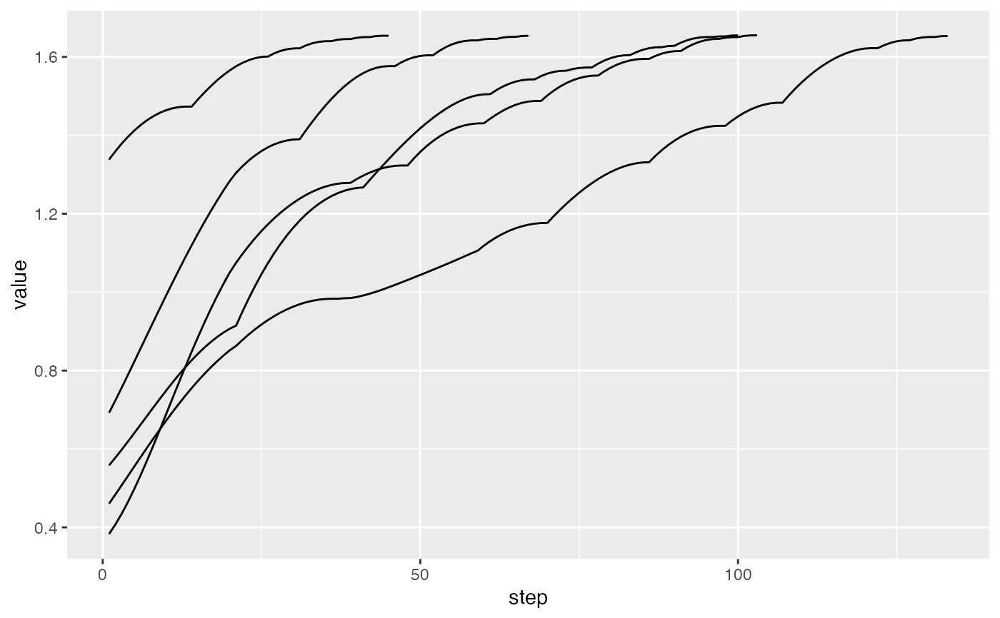

This is a convenience method that returns a data frame summarising the index values for multiple tour paths.
Arguments
- bases_list
list of histories produced by
save_history- index_f
index function to apply to each projection
Examples
# The max.tries is low for satisfying CRAN checks
# Increase it for using in practice
holes1d <- guided_tour(holes(), 1, max.tries=2)
# Perform guided tour 5 times, saving results
tries <- replicate(5, save_history(flea[, 1:6], holes1d), simplify = FALSE)
#> Converting input data to the required matrix format.
#> Target: 0.863, 87.4% better
#> Target: 0.983, 13.9% better
#> Target: 0.985, 0.2% better
#> Target: 1.106, 12.3% better
#> Target: 1.177, 6.4% better
#> Target: 1.331, 13.1% better
#> Target: 1.424, 7.0% better
#> Target: 1.483, 4.1% better
#> Target: 1.622, 9.4% better
#> Target: 1.642, 1.2% better
#> Target: 1.651, 0.5% better
#> Target: 1.653, 0.1% better
#> No better bases found after 2 tries. Giving up.
#> Final projection:
#> -0.467
#> 0.274
#> 0.262
#> 0.561
#> -0.333
#> 0.462
#> Converting input data to the required matrix format.
#> Target: 1.075, 180.6% better
#> Target: 1.279, 18.9% better
#> Target: 1.323, 3.5% better
#> Target: 1.431, 8.1% better
#> Target: 1.488, 4.0% better
#> Target: 1.553, 4.4% better
#> Target: 1.595, 2.7% better
#> Target: 1.615, 1.3% better
#> Target: 1.646, 1.9% better
#> Target: 1.651, 0.3% better
#> Target: 1.655, 0.3% better
#> No better bases found after 2 tries. Giving up.
#> Final projection:
#> 0.454
#> -0.287
#> -0.226
#> -0.552
#> 0.320
#> -0.503
#> Converting input data to the required matrix format.
#> Target: 1.473, 10.1% better
#> Target: 1.601, 8.7% better
#> Target: 1.622, 1.3% better
#> Target: 1.640, 1.1% better
#> Target: 1.646, 0.3% better
#> Target: 1.651, 0.3% better
#> Target: 1.654, 0.2% better
#> No better bases found after 2 tries. Giving up.
#> Final projection:
#> -0.462
#> 0.233
#> 0.269
#> 0.546
#> -0.328
#> 0.504
#> Converting input data to the required matrix format.
#> Target: 1.304, 88.4% better
#> Target: 1.390, 6.6% better
#> Target: 1.577, 13.4% better
#> Target: 1.604, 1.8% better
#> Target: 1.642, 2.4% better
#> Target: 1.646, 0.2% better
#> Target: 1.651, 0.3% better
#> Target: 1.654, 0.2% better
#> No better bases found after 2 tries. Giving up.
#> Final projection:
#> -0.427
#> 0.295
#> 0.238
#> 0.550
#> -0.365
#> 0.488
#> Converting input data to the required matrix format.
#> Target: 0.915, 63.8% better
#> Target: 1.267, 38.5% better
#> Target: 1.505, 18.8% better
#> Target: 1.543, 2.5% better
#> Target: 1.565, 1.4% better
#> Target: 1.573, 0.5% better
#> Target: 1.605, 2.0% better
#> Target: 1.625, 1.3% better
#> Target: 1.628, 0.2% better
#> Target: 1.651, 1.4% better
#> Target: 1.652, 0.1% better
#> Target: 1.655, 0.2% better
#> No better bases found after 2 tries. Giving up.
#> Final projection:
#> 0.441
#> -0.262
#> -0.268
#> -0.521
#> 0.331
#> -0.532
# Interpolate between target bases
itries <- lapply(tries, interpolate)
paths <- paths_index(itries, holes())
head(paths)
#> try step value improvement
#> 1 1 1 0.4605012 0.00000000
#> 2 1 2 0.4840090 0.02350788
#> 3 1 3 0.5078730 0.02386395
#> 4 1 4 0.5319267 0.02405372
#> 5 1 5 0.5560185 0.02409183
#> 6 1 6 0.5800099 0.02399140
if (require(ggplot2)) {
ggplot(data = paths, aes(x=step, y=value, group = try)) + geom_line()
## ggplot(data = paths, aes(x=step, y=improvement, group = try)) + geom_line()
}
